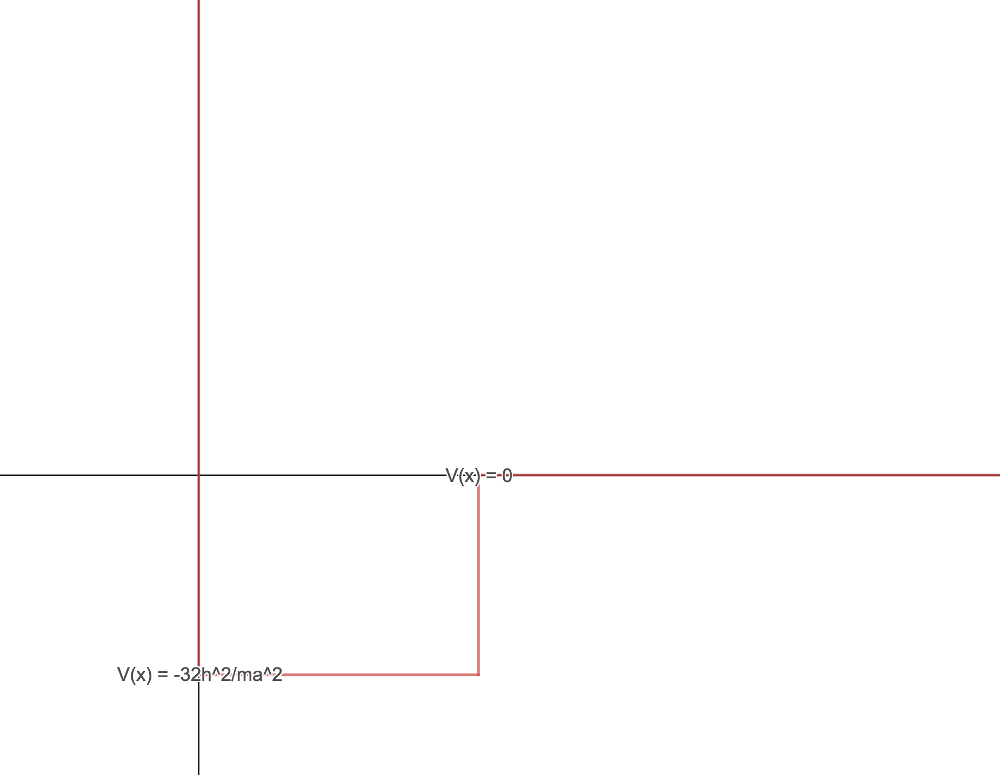
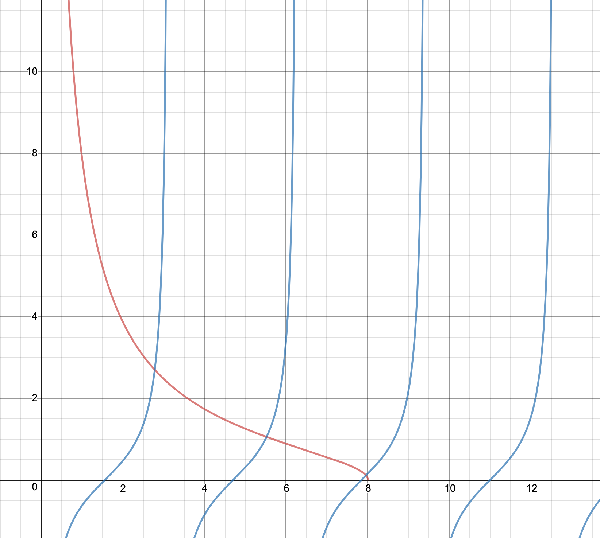

Griffiths Quantum Mechanics 2nd Edition: Problem 2.40
This problem.....this problem was a huge test of will and persistence. It is likely very straightforward to the majority of students out there, but as a first-time quantum mechanics
problem set creator, this problem was hugely challenging for me. However, I was able to arrive at the solution, it just took a much longer time. Alright then, let's jump right into
it. Let's start by constructing the general form of the time-independent wavefunction for this potential. We are interested in the bound states, therefore we can assume that $E \ < \ 0$.
At this beginning stage, it helps a bit to visualize the potential, rather than just looking at the mathematical definition. This potential would look something like this:

As we can see, the potential is a potential well, with an infinite potential barrier to the left, and $0$ potential to the right. From looking at this potential, it is obvious
that it is neither even nor odd, therefore, we have to construct and solve for the wavefunction without the added convenience of assuming even or odd solutions. For the region where
$0 \ \leq \ x \ \leq \ a$, we have:
$$-\frac{\hbar^2}{2m}\frac{\partial^2 \psi}{\partial x^2} \ - \ V_0\psi \ = \ E\psi \ \Rightarrow \ V_0 \ = \ \frac{32\hbar^2}{ma^2}$$
$$\Rightarrow \ \frac{\partial^2 \psi}{\partial x^2} \ = \ -\frac{2m(E \ + \ V_0)}{\hbar^2}\psi$$
By a previously proved formula in the Chapter, we know that $E \ > \ V_{min}$. This means that $E \ > \ V_0$, so we can say that $(E \ + \ V_0)$ is positive. We then have:
$$\frac{\partial^2 \psi}{\partial x^2} \ = \ -l^2\psi \ \Rightarrow \ \psi \ = \ Ae^{ilx} \ + \ Be^{-ilkx} \ = \ F\sin(lx) \ + \ G\cos(lx) \ \Rightarrow \ l \ = \ \frac{\sqrt{2m(E \ + \ V_0)}}{\hbar^2}$$
Now, for the region where $x \ > \ a$, we have:
$$-\frac{\hbar^2}{2m}\frac{\partial^2 \psi}{\partial x^2} \ = \ E\psi \ \Rightarrow \ \frac{\partial^2 \psi}{\partial x^2} \ = \ -\frac{2mE}{\hbar^2}\psi \ \Rightarrow \ \frac{\partial^2 \psi}{\partial x^2} \ = \ k^2\psi
\ \Rightarrow \ \psi \ = \ Ce^{kx} \ + \ Ee^{-kx} \ \Rightarrow \ k \ = \ \frac{\sqrt{-2mE}}{\hbar}$$
$$x \ \rightarrow \ \infty \ \Rightarrow \ Ce^{kx} \ \rightarrow \ \infty \Rightarrow \ \psi \ = \ Ee^{-kx}$$
Ok, we can now write out the general form of the wavefunction for the bound states:
$$\psi(x) \ = \ \left\{
\begin{array}{ll}
0 & \text{when} \ \ x \ < \ 0 \\
F\sin(lx) \ + \ G\cos(lx) \ & \text{when} \ \ 0 \ \leq x \ \leq a \\
Ee^{-kx} & \text{when} \ x \ > \ a
\end{array}
\right.$$
Let's look at the boundary conditions. Since $\psi$ must be continuous at all points, we can look at the psotion where $x \ = \ 0$. We must have:
$$F\sin(l(0)) \ + \ G\cos(l(0)) \ = \ 0 \ \Rightarrow \ G\cos(0) \ = \ 0 \ \Rightarrow \ G \ = \ 0$$
This means that $\psi \ = \ F\sin(lx)$. We also know that $\psi$ must be continuous at $a$, so we get:
$$F\sin(la) \ = \ Ee^{-ka}$$
We also know that $\text{d}\psi/\text{dx}$ is continuous at all point where $V(x)$ is finite, therefore:
$$\frac{\text{d}}{\text{dx}} F\sin(la) \ = \ \frac{\text{d}}{\text{dx}} Ee^{-ka} \ \Rightarrow \ lF\cos(la) \ = \ -kEe^{-ka}$$
Dividing the second equation by the first, we get:
$$\frac{lF\cos(la)}{F\sin(la)} \ = \ -\frac{kEe^{-ka}}{Ee^{-ka}} \ \Rightarrow \ l\cot(la) \ = \ -k$$
Just like in the finite square well example, we can set $z \ = \ la$ and $z \ = \ \frac{a}{\hbar}\sqrt{2mV_0}$. This means that we get:
$$-\cot(z) \ = \ \sqrt{(z_0/z)^2 \ - \ 1}$$
So far, this is the same as the odd solutions to the finite square well, except this time, we know that $V_0 \ = \ 32\hbar^2/ma^2$. We now know that
$z \ = \ \frac{a}{\hbar}\sqrt{2m(\frac{32\hbar^2}{ma^2})} \ = \ \frac{a}{\hbar}\sqrt{64\frac{\hbar^2}{a^2}} \ = \ 8$. So this means that for this potential, there is only
one value of $z_0$. We can then say that for this potential:
$$-\cot(z) \ = \ \sqrt{(8/z)^2 \ - \ 1}$$
Now we have a transcedental equation. We can graph these two functions and get:

Where the red line is $f(z) \ = \ \sqrt{(8/z)^2 \ - \ 1}$ and the blue lines are the graph of $f(z) \ = \ -\cot(z)$. We can see that the graphs intersect at $3$ points, therefore
there are $3$ bound states for this potential.
Moving onto the next question, we have to find the likelihood that when $\psi$ is in the highest bound energy state, it is found outside the well. We know that $z \ = \ la \ = \ a\frac{\sqrt{2m(E \ + \ V_0)}}{\hbar}$.
This means that we can rearrange this equation to get:
$$z \ = \ a\frac{\sqrt{2m(E \ + \ V_0)}}{\hbar} \ \Rightarrow \ \frac{z^2\hbar^2}{a^2} \ = \ 2m(E \ + \ V_0) \ \Rightarrow \ E \ + \ V_0 \ = \ \frac{z^2\hbar^2}{2ma^2}$$
But $V_0$ is just some constant, so as we increase $z$, the energy $E$ increases as well. The highest value of $z$ that satisfies this potential is $z \ = \ 7.957$. To find
the likelihood that the particle is located in the region where $x \ > \ a$, we need to simply take the integral over the wavefunction in this region:
$$\displaystyle\int_{a}^{\infty} \ |E|^2 \ e^{-2kx} \ \text{dx}$$
But we still don't know what $E$ is, so we have to normalize the wavefunction. We get:
$$\displaystyle\int_{a}^{\infty} \ |E|^2 \ e^{-2kx} \ \text{dx} \ + \ \displaystyle\int_{0}^{a} \ |F|^2 \ \sin^2(lx) \ \text{dx} \ = \ 1$$
We also know that from before, that $F\sin(la) \ = \ Ee^{-ka}$. Notice that when we evaluate the integral, we get:
$$\displaystyle\int_{a}^{\infty} \ |E|^2 \ e^{-2kx} \ = \ |E|^2 \ \Big(-\frac{e^{-2kx}}{2k}\Big) \ \biggr\rvert_{a}^{\infty} \ = \ |E|^2 \ \frac{e^{-2ka}}{2k} \ = \ |F|^2 \ \frac{\sin^2(la)}{2k}$$
Now, evaluating the other integral (using WolframAlpha because I was getting tired of integrating), we get:
$$\displaystyle\int_{0}^{a} \ |F|^2 \ \sin^2(lx) \ \text{dx} \ = \ |F|^2 \ \Big( \frac{a}{2} \ - \ \frac{\sin(2al)}{4l} \Big)$$
Again, we can write the sum of the two integrals:
$$|F|^2 \ \Big( \frac{a}{2} \ - \ \frac{\sin(2al)}{4l} \Big) \ + \ |F|^2 \ \frac{\sin^2(la)}{2k} \ = \ 1 \ \Rightarrow \ |F|^2 \Big( \frac{a}{2} \ - \ \frac{\sin(2al)}{4l} \ + \ \frac{\sin^2(la)}{2k} \Big) \ = \ 1$$
Let us now make some substitutions. We can define the following variables:
$$\Omega \ = \ \frac{a}{2} \ - \ \frac{\sin(2al)}{4l}$$
$$\Theta \ = \ \frac{\sin^2(la)}{2k}$$
$$|F|^2(\Omega \ + \ \Theta) \ = \ 1 \ \Rightarrow \ |F|^2 \ = \ \frac{1}{\Omega \ + \ \Theta}$$
Going back to the original equation:
$$\displaystyle\int_{a}^{\infty} \ |E|^2 \ e^{-2kx} \ \text{dx} \ + \ \displaystyle\int_{0}^{a} \ |F|^2 \ \sin^2(lx) \ \text{dx} \ = \ 1 \ \Rightarrow \ \displaystyle\int_{a}^{\infty} \ |E|^2 \ e^{-2kx} \ \text{dx} \ + \ \frac{\Omega}{\Omega \ + \ \Theta} \ = \ 1$$
$$\Rightarrow \ \displaystyle\int_{a}^{\infty} \ |E|^2 \ e^{-2kx} \ \text{dx} \ = \ \frac{\Theta}{\Omega \ + \ \Theta}$$
Now, all we have to do is substitute in values into the expression representing the integral:
$$\frac{\Theta}{\Omega \ + \ \Theta} \ = \ \frac{\frac{\sin^2(la)}{2k}}{\frac{a}{2} \ - \ \frac{\sin(2al)}{4l} \ + \ \frac{\sin^2(la)}{2k}} \ = \ \frac{2l\sin^2(z)}{2zk \ - \ k\sin(2z) \ + \ 2l\sin^2(z)}$$
Remembering that $z \ = \ 7.957$, $z_0 \ = \ 8$, and that $k/l \ = \ \sqrt{(z_0/z) \ - \ 1} \ = \ 0.104$, we can substitue in our value to get:
$$\displaystyle\int_{a}^{\infty} \ |E|^2 \ e^{-2kx} \ \text{dx} \ = \ 0.54138$$
This means that there is $\approx \ 54.138$% chance that the particle will be found outside the well. Griffiths remarks on thhis fact, but I will bring it up as well: the particle, despite
being bounded, is more likely to be found outside the well than inside it!